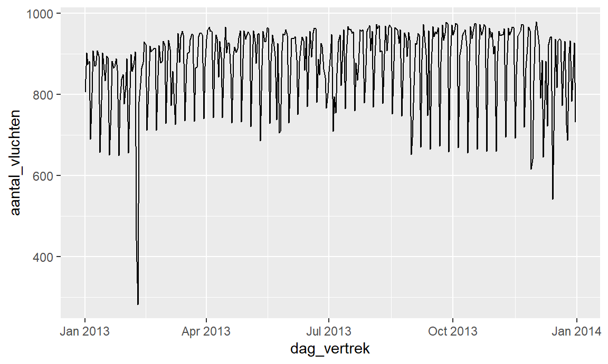
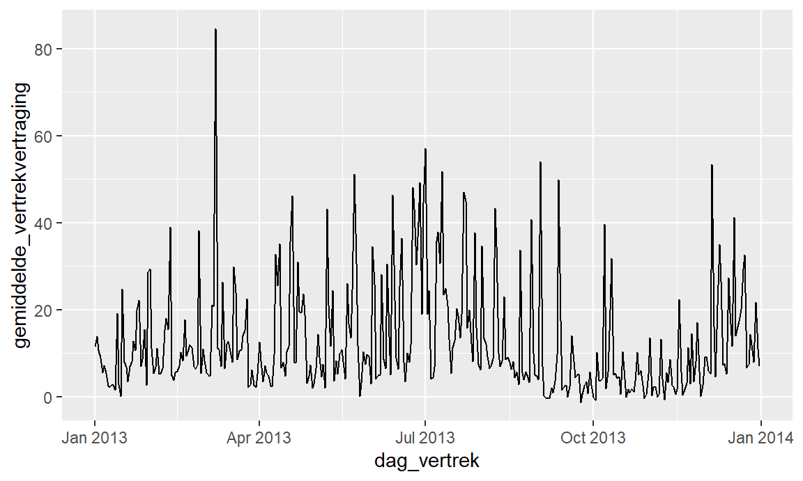
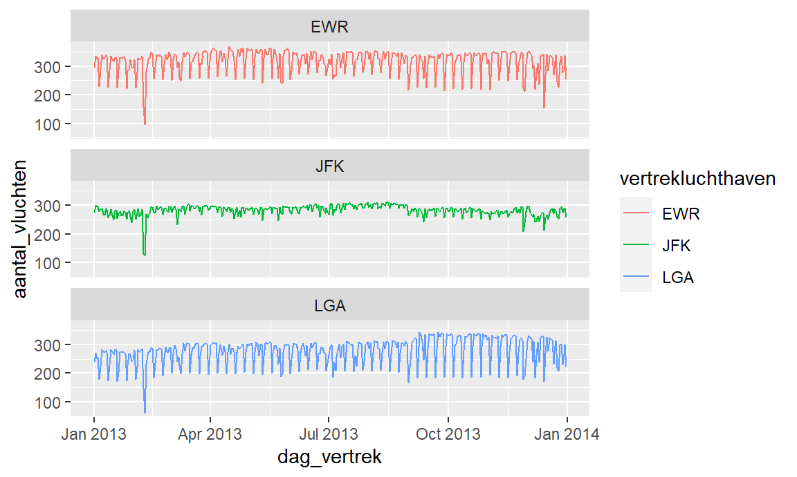
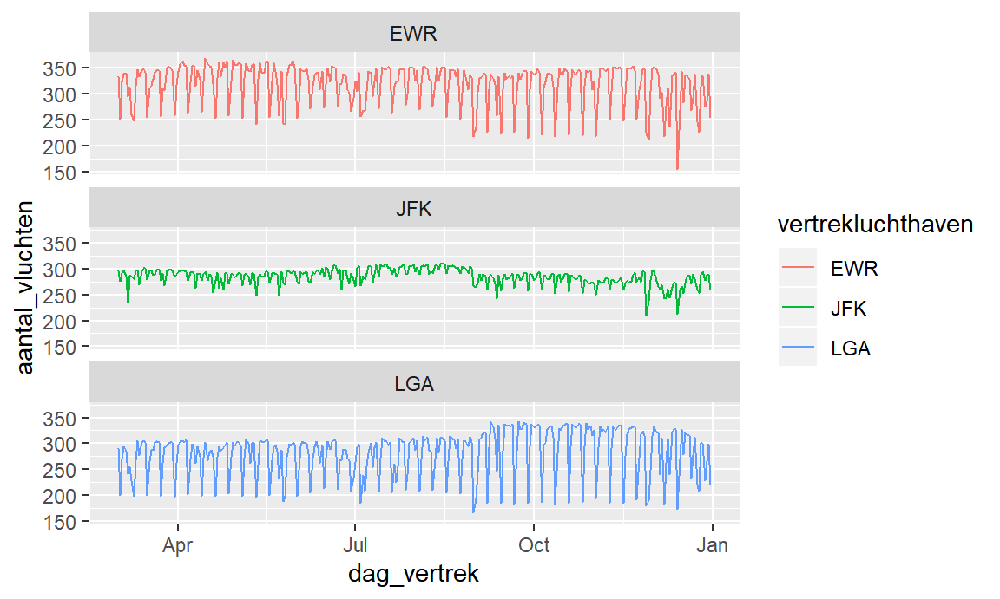
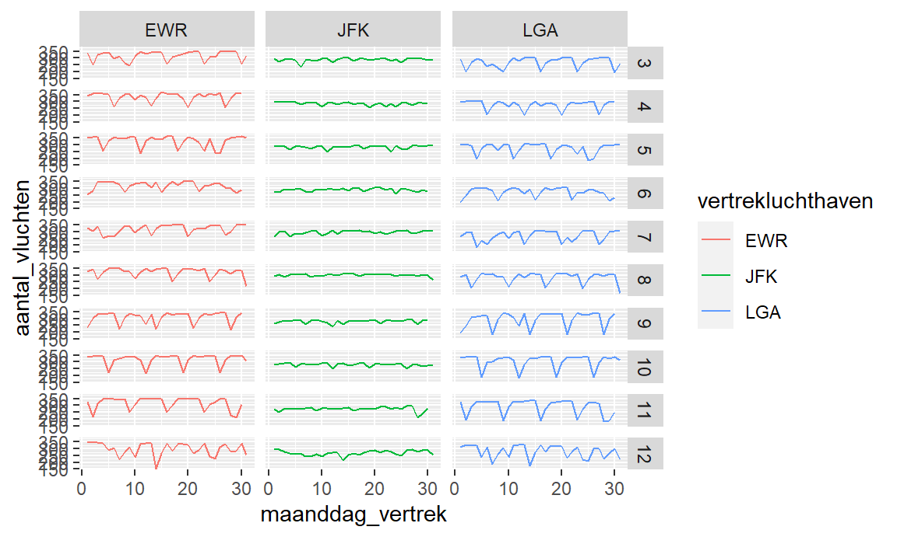

Chapter 11 [Lecture notes] Tijdsdata
11.1 Inleiding
11.1.1 Tijdstippen versus periodes
- We kunnen tijdgerelateerde data in twee categorieën onderverdelen: tijdstippen en periodes.
- Tijdstip.
- Verwijst naar een specifiek moment in de tijd.
- 3 varianten:
- datum (“01-01-2017”) verwijst naar een specifieke dag.
- datum-tijdstip (“01-01-2017 13:54”) verwijst naar een specifiek moment op een specifieke dag.
- tijdstip (“13:54”) verwijst naar een specifiek moment op een ongedefinieerde dag.
- Periode.
- Verwijst naar een periode en wordt typisch uitgedrukt aan de hand van de duur van de periode.
- Bijvoorbeeld: Een periode van “3605 seconden”” of een periode van “2 maanden en 1 dag.”
- Soms wordt een periode specifiek gedefinieerd aan de hand van twee specifieke tijdstippen die het begin en het einde van de periode aangeven.
- Bijvoorbeeld: De periode van 01-01-2017 tot 03-01-2017.
- Verwijst naar een periode en wordt typisch uitgedrukt aan de hand van de duur van de periode.
- Bestudeer hoofdstuk 16 van het boek ‘R for Data Science’ van Grolemund en Wickham !
11.1.2 Afronden van tijdstippen
- Ieder tijdstip heeft een zekere nauwkeurigheid. Sommige tijdstippen zijn tot op de seconde gedefinieerd terwijl andere slechts een nauwkeurigheid hebben van weken of maanden.
- Soms kan het voor visualisaties of analyses zinvol zijn om tijdstippen minder nauwkeurig te maken en deze af te ronden.
11.2 Periode-data
- We kunnen 3 soorten van periodes onderscheiden, waarbij het eerste type (interval) naar een specifieke periode tussen 2 tijdstippen verwijst en de 2 andere types (duration en period) naar een periode van een specifieke duur verwijzen maar telkens onafhankelijk van het specifieke tijdstip.
11.2.1 Interval
- Een interval is een periode die bepaald wordt door twee specifieke tijdstippen.
- Intervals worden weinig gebruikt om rechtstreeks te analyseren, maar kunnen als tussenstap gebruikt worden om de duurtijd van specifieke periodes te bepalen.
11.2.2 Duration
- Duration is de duur van een periode uitgedrukt als het exact aantal seconden die feitelijk verstreken zijn tussen twee tijdstippen.
- Tussen ‘26 maart 2017 02:00:00’ en ‘26 maart 2017 03:00:01’ is slechts 1 seconde feitelijk verstreken omdat we van 2u naar 3u zijn overgeschakeld op het zomeruur.
- Durations gebruik je voornamelijk als je de werkelijke tijd tussen twee tijdstippen wenst te berekenen of wanneer je een aantal seconden wenst toe te voegen bij of af te trekken van een specifiek tijdstip.
11.2.3 Period
- De tijd die verstreken ‘lijkt’ te zijn (op een klok) tussen twee tijdstippen.
- Dus tussen ‘26 maart 2017 02:00:00’ en ‘26 maart 2017 03:00:01’ zit een period van 1 uur en 1 seconde.
- Periods gebruik je voornamelijk als je periodes wilt toevoegen aan tijdstippen zonder rekening te moeten houden met onverwachte sprongen in de tijd (zomertijd/wintertijd, schrikkeljaren, …).
- Dus als je bij ieder tijdstip 1 dag (24u) wenst toe te voegen, kan je beter een period gebruiken dan een duration, omdat je anders rekening moet houden met de dag waarop we van zomer- naar winteruur gaan en omgekeerd.
11.3 Analyseren van tijdgerelateerde data
- Een eerste stap om inzicht te krijgen in de tijdgerelateerde data is met behulp van de summary() functie. Het is vooral nuttig om naar de minima en maxima te kijken. Dit geeft vaak aan of de tijdsperiode waarvoor de data verzameld is overeenkomt met de verwachte periode. In onderstaand geval blijkt dit in orde te zijn.
## vertrekluchthaven aankomstluchthaven maatschappij
## Length:319809 Length:319809 Length:319809
## Class :character Class :character Class :character
## Mode :character Mode :character Mode :character
##
##
##
##
## vertrek_gepland vertrek_werkelijk vertrek_vertraging
## Min. :2013-01-01 05:17:00 Min. :2013-01-01 05:19:00 Min. : -43.00
## 1st Qu.:2013-04-05 09:07:00 1st Qu.:2013-04-05 09:10:00 1st Qu.: -5.00
## Median :2013-07-04 13:43:00 Median :2013-07-04 13:47:00 Median : -2.00
## Mean :2013-07-03 21:27:29 Mean :2013-07-03 21:40:07 Mean : 12.62
## 3rd Qu.:2013-10-01 20:37:00 3rd Qu.:2013-10-01 20:39:00 3rd Qu.: 11.00
## Max. :2013-12-31 23:32:00 Max. :2014-01-01 00:19:00 Max. :1301.00
##
## aankomst_gepland aankomst_werkelijk
## Min. :2013-01-01 07:02:00 Min. :2013-01-01 06:55:00
## 1st Qu.:2013-04-05 11:22:00 1st Qu.:2013-04-05 11:21:00
## Median :2013-07-04 15:42:00 Median :2013-07-04 15:36:00
## Mean :2013-07-03 23:42:08 Mean :2013-07-03 23:49:08
## 3rd Qu.:2013-10-01 22:27:00 3rd Qu.:2013-10-01 22:12:00
## Max. :2014-01-01 01:10:00 Max. :2014-01-01 01:53:00
##
## aankomst_vertraging afstand weekdag_vertrek week_vertrek
## Min. : -86.000 Min. : 80 zo:44396 Min. : 1.00
## 1st Qu.: -17.000 1st Qu.: 502 ma:48246 1st Qu.:14.00
## Median : -5.000 Median : 828 di:48084 Median :27.00
## Mean : 6.987 Mean :1035 wo:47597 Mean :26.77
## 3rd Qu.: 14.000 3rd Qu.:1372 do:47378 3rd Qu.:40.00
## Max. :1272.000 Max. :4983 vr:47455 Max. :53.00
## za:36653
## maand_vertrek dag_vertrek maanddag_vertrek
## Min. : 1.000 Min. :2013-01-01 00:00:00 Min. : 1.00
## 1st Qu.: 4.000 1st Qu.:2013-04-05 00:00:00 1st Qu.: 8.00
## Median : 7.000 Median :2013-07-04 00:00:00 Median :16.00
## Mean : 6.569 Mean :2013-07-03 07:43:47 Mean :15.74
## 3rd Qu.:10.000 3rd Qu.:2013-10-01 00:00:00 3rd Qu.:23.00
## Max. :12.000 Max. :2013-12-31 00:00:00 Max. :31.00
## 11.3.0.1 Analyse visuele tijdreekspatronen
- Eén van de meest voorkomende exploratieve visuele analysetechnieken voor tijdgerelateerde data is het zoeken naar patronen hoe een variabele doorheen de tijd verandert.
- De eerste stap is hierbij telkens de tijdreekspatronen te visualiseren. Om dit te doen kan je volgend stappenplan toepassen.
- Bepaal over welke tijdsdimensie je patronen wenst te bestuderen. Dit is je X-variabele. De X-variabele bepaalt de granulariteit van je visualisatie. Wens je op niveau van dagen te visualiseren, dan is je tijdsdimensie ‘dag,’ en dan ga je gedetailleerder naar de patronen kijken, dan wanneer je op niveau van bijvoorbeeld ‘maand’ naar de data kijkt.
- Bepaal welke variabele je doorheen de tijd wenst te bestuderen. Dit is je Y-variabele.
- Je gaat voor iedere X waarde 1 Y waarde moeten hebben. Vaak betekent dit dat je deze Y-variabele nog moet aanmaken. Mogelijke Y variabelen zijn het aantal observaties per tijdseenheid of de centrummaat (bv. mediaan) van een specifieke variabele.
- Je R-code vertrekt steeds van de oorspronkelijke dataset, groepeert vervolgens op de tijdsdimensie, berekent de gewenste samenvattende statistiek (summarise()) en visualiseert vervolgens via ggplot() + geom_line().
- We willen bijvoorbeeld de evolutie zien van het aantal vluchten per dag. De tijdsdimensie is dus dag_vertrek en de Y-variabele wordt gemaakt door het aantal rijen per dag te tellen.
- De analyse van onderstaande grafiek toont een aantal opvallende zaken:
- Er is een zware en niet-wederkerende daling tussen januari en april. Hier moet iets uitzonderlijks gebeurd zijn.
- We zien een terugkerend patroon, waarbij om de aantal dagen een daling is in het aantal vluchten.
- De schommelingen en met name de daling op het einde van ieder terugkerend patroon wordt groter op het einde van het jaar.

- We kunnen een soortgelijke analyse doen voor de gemiddelde vertrekvertraging.

- Een volgende stap is vaak om de tijdreekspatronen apart te visualiseren voor de verschillende waarden van een categorische variabele.
- Dit kan op eenvoudige wijze door in onze R-code deze categorische variabele op te nemen in het group_by() gedeelte en vervolgens aparte plots te creëren met behulp van facet_wrap().
- Laten we de evolutie van het aantal vluchten per dag bijvoorbeeld uitsplitsen per luchthaven.
- Uit onderstaande analyse blijkt dan dat het aantal vluchten vanuit JFK veel minder sterk schommelt dan EWR en LGA. Wel valt op dat alle drie de luchthavens een sterke uitzonderlijke daling kenden in de eerste helft van het jaar.

11.3.0.2 Identificeren van opmerkelijke gebeurtenissen in een tijdreeks
- In de evolutie van het aantal vluchten valt op dat er een uitzonderlijke daling plaatsvond in de periode tussen januari en april.
- In zulke gevallen is het best te achterhalen wat hier precies de oorzaak is.
- De eerste stap is dan ook het exacte tijdstip te identificeren.
- We kunnen dit doen door de data te filteren op die dagen dat er zeer weinig vluchten zijn.
## # A tibble: 7 x 3
## # Groups: dag_vertrek [3]
## dag_vertrek vertrekluchthaven aantal_vluchten
## <dttm> <chr> <int>
## 1 2013-02-08 00:00:00 EWR 159
## 2 2013-02-08 00:00:00 JFK 133
## 3 2013-02-08 00:00:00 LGA 148
## 4 2013-02-09 00:00:00 EWR 96
## 5 2013-02-09 00:00:00 JFK 125
## 6 2013-02-09 00:00:00 LGA 61
## 7 2013-12-14 00:00:00 EWR 155Uit deze analyse blijkt dat de daling plaatsvond op 8 en 9 februari 2013. Na enig opzoekwerk blijkt dat New York toen geteisterd werd door een hevige sneeuwstorm waardoor zeer veel vluchten geannuleerd moesten worden.
Omdat dit moment niet representatief is voor een normaal jaar, beslissen we om enkel met de tijdgerelateerde data van maart tot en met december verder te gaan.
We kunnen de tijdreeks van de nieuwe periode opnieuw visualiseren.

- We kunnen verder inzoomen in de data door naar de tijdreekspatronen te kijken per maand en per luchthaven.
